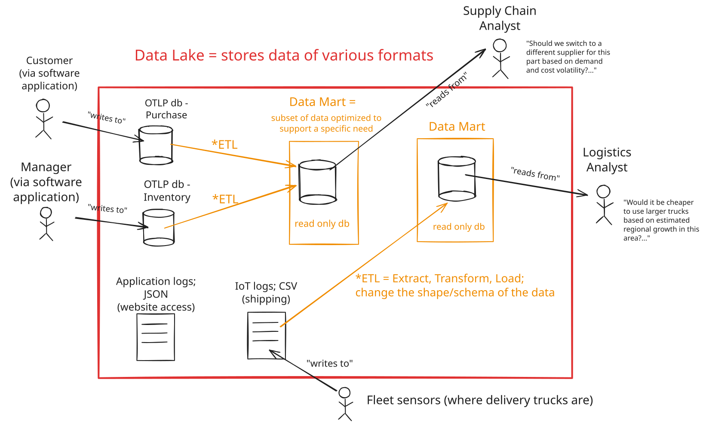

Data Access Patterns
Data may be considered to follow an OLTP or OLAP pattern. These have very different requirements and purposes.
Online Transaction Processing (OLTP)
What we've covered so far has been focused on OLTP.
OLTP is designed for:
- Operational / line-of-business applications
- Consumer facing applications
OLTP is optimized for:
- Fast, concurrent, transactional writes (insert, update, delete)
- Normalized schema to eliminate redundancy
- Holds current state of the system
- Protects data integrity!
OLTP has the following properties:
- Highly normalized
- Highly consistent
In OLTP the schema designed to keep the data clean and consistent, and prevent data anomalies.
Where OLTP fails for decision support:
- Time span: Often holds current state only
- Granularity: Uses many transactions (queries can "block" other queries, causing performance issues)
- Dimensionality: Normalized → many joins (a simple business question requires a complex query)
Online Analytical Processing (OLAP)
OLAP often falls under the heading of "Business Intelligence (BI)".
OLAP is designed for:
- Data exploration
- Reporting
- Dashboards
- Analytics
- ...
OLAP is optimized for:
- Fast concurrent reads
- Long-term storage
- Support the needs of a specific business domain (e.g. sales, human resources, logistics, etc.)
OLAP has the following properties:
- Highly denormalized (tables may be "flat" and look more like the result of a specific SQL query)
- May have calculated and/or derived attributes
- May have many different "views" of the same underlying data
- May have historical or archival data
- Is designed "with the end user in mind"
In OLAP the schema is designed to answer a specific business question (or set of questions).
Extracting Value from Data

Data Lake

A data lake is a cheap scalable place for raw or lightly processed copies from many systems.
May contain:
-
Copy of OLTP data (backups, historical, archive data)
- Application data
-
Raw data from non-relational sources (e.g. JSON, XML, CSV, etc.)
- Logs, events, etc.
-
Unstructured data (e.g. images, videos, audio, etc.)
- Documents, emails, etc.
Schema-on-read - unlike more refined points that come later in the system, in a data lake the schema is "raw" and not defined in advance. A schema can be created on the fly as data is consumed.
Extract, Transform, Load (ETL)
An ETL process is a way to extract data from a source system and transform it into a format that is suitable for consumption.
ETL processes are often used to "pipeline" data from a source system to a data warehouse.
- External system to data lake
- Data lake to data warehouse / data mart
The end goal of ETL is to make the data specific, useful, and accessible to the people who need it.
Data Mart

A data mart is a repository of data that is typically designed for use by a specific audience for analytical purposes.
Data from a larger dataset is "reshaped" to fit the querying needs of a specific audience. This often involves denormalizing the data - shaping the data to answer a specific business question.
By the time data is used for reporting or exploration, it might be a full copy, a filtered slice, or a blend of sources - depending on who needs it and what they're doing.
The tradeoff is introducing redundancy in the data to make it more efficient to query.